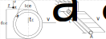

Aerodynamic linear static cantilever beam example
In this tutorial, the linear steady analysis of a cantilever beam is presented and how to solve it using ONSAS is described. The aim of this example is to validate the aerodynamic steady and uniform wind loads applied to a cantilever beam undergoing small displacements and strains. The aerodynamic force variation due to the beam deformation is not considered. Under these hypotheses an analytic solution is available.
The beam is submitted to a uniform air wind velocity field $v_a$ at 20 degrees and atmospheric pressure along axis $z$, and because of an ice accretion on the frame cross section, lift and drag forces are induced. The lift, drag and moment fluid forces are characterized with their respective aerodynamic coefficients $c_d$ $c_l$ and $c_m$ are based on this reference. The beam has a length $L$ and a hollow cylindrical cross-section with diameter $d_{ext}$ and a thickness $b$ as it is shown in the following figure.
Analytic solution
The analytic steady solution is obtained using the Euler-Bernoulli beam theory. The rotations are:
\[ \theta_z(x)= \frac{qy}{6 EI_{zz}} \left( (x-L)^3 +L^3 \right)\]
\[ \theta_y(x)= \frac{qz}{6 EI_{yy}} \left( (x-L)^3 +L^3 \right)\]
\[ \theta_x(x)= \frac{qm}{2 JG} \left( (L-x)^2 -L^2 \right)\]
in which $q = 1/2 \rho v_a^2 d_{ext}$, $q_z = q c_d$, $q_y = q c_l$ and $q_m = q c_m$.
Integrating the rotations we obtain the displacements:
\[ u_y(x)= -\frac{qy}{24 EI_{zz}} \left( 6L^2x^2 - 4Lx^3 + x^4 \right)\]
\[ u_z(x)= -\frac{qz}{24 EI_{yy}} \left( 6L^2x^2 - 4Lx^3 + x^4 \right) \]
Numerical solution
Before defining the structs, the workspace is cleaned and the ONSAS directory is added:
close all, clear all ; addpath( genpath( [ pwd '/../../src'] ) );The material parameters, Young $E$ and shear $G$ moduli and the Poisson's ratio $\nu$ are:
E = 70e9 ; nu = 0.3 ; G = E / (2 * (1+nu)) ;Geometrical dimensions sketched in Fig 1 are:
l = 20 ; dext = .5 ; b = 1e-3 ; dint = dext - 2*b ;
A = pi * (dext^2 - dint^2) / 4 ;
J = pi * (dext^4 - dint^4) / 32 ; Iyy = J/2 ; Izz = Iyy ;The fluid properties are:
rhoA = 1.225 ; nuA = 1.6e-5;the number of elements employed to discretize the beam is declared as a global variable:
global numElements
numElements = 10 ;MEBI parameters
materials
Since the example contains only one linear Euler Bernoulli element the fields of the materials struct will have only one entry. Although, the constitutive behavior law selected is Saint-Venant-Kirchhoff:
materials.hyperElasModel = 'linearElastic' ;
materials.hyperElasParams = [ E nu ] ;elements
Two different types of elements are considered, node and frames. The nodes will be assigned in the first entry (index $1$) and the beam at the index $2$. The elemType field is then:
elements(1).elemType = 'node' ;
elements(2).elemType = 'frame' ;The node type has no cross-section geometry to assign (an empty array is automatically set). Since the frame element has no implemented a hollow cylindrical cross-section, then a 'generic' cross-section (in $y$ and $z$) is used. Thus the elemCrossSecParams field is:
elements(2).elemCrossSecParams{1,1} = 'generic' ;
elements(2).elemCrossSecParams{2,1} = [ A J Iyy Izz ] ;Now the parameters to include aerodynamic forces automatically on the frame element are defined. The drag lift, and moment cross section functions are set in concordance with the function names located at the same example folder. Thus the aeroCoefs field is a row cell defined as:
elements(2).aeroCoefs = {'dragCoefFunctionLA'; 'liftCoefFunctionLA'; 'momentCoefFunctionLA'} ;Next the elemTypeAero field contain the information of the chord vector. This vector is defined first considering the orientation of the cross section set up in lift, drag and moment experiments, and then how that cross section is located for the example. In this case the orientation of the chord vector is along $y$. In general note that the chord vector $t_{ch}$ must be given in reference (non canonical configurations). In this example the cable is oriented along $y$ so the direction will be $[0~1~0]$ as it is shown in Fig 1. Also the length of the chord is added to the norm of the chord vector, for cylindrical cantilever beams is $d_{ext}$. The aerodynamic tangent matrix is the last boolean element of the vector elemTypeAero, and in this case is set as false. All this information is added into elemTypeAero field of elements struct such that:
numGaussPoints = 4 ;
computeAeroTangMatrix = false ;
elements(2).elemTypeAero = [0 dext 0 numGaussPoints computeAeroTangMatrix];in which 4 Gauss integration points are employed to compute the aerodynamic force. This value is enough in most cases.
boundaryConds
Only one welded (6 degrees of freedom are set to zero) boundary condition (BC) is considered:
boundaryConds(1).imposDispDofs = [ 1 2 3 4 5 6 ] ;
boundaryConds(1).imposDispVals = [ 0 0 0 0 0 0 ] ;mesh parameters
The coordinates of the mesh nodes are given by the matrix:
mesh.nodesCoords = [ (0:(numElements))'*l/numElements zeros(numElements+1,2) ] ;The connectivity is introduced using the conecCell. Each entry of the cell contains a vector with the four indexes of the MEBI parameters, followed by the indexes of nodes that compose the element (node connectivity). For didactical purposes each element entry is commented. First the cell is initialized:
mesh.conecCell = { } ;then the first welded node is defined with material (M) zero since nodes don't have material, the first element (E) type (the first entry of the elements struct), and (B) is the first entry of the the boundaryConds struct. Finally the node is assigned:
mesh.conecCell{ 1, 1 } = [ 0 1 1 1 ] ;Next the frame elements MEB parameters are set. The frame material is the first material of materials struct, then $1$ is assigned. The second entry of the elements struct correspond to the frame element employed, so $2$ is set. Finally no BC is required for this element, then $0$ is used. Consecutive nodes build the element so then the mesh.conecCell is:
for i=1:numElements,
mesh.conecCell{ i+1,1 } = [ 1 2 0 i i+1 ] ;
endinitial Conditions
Any non-homogeneous initial condition (IC) are set for this case, then an empty struct is used:
initialConds = struct() ;analysisSettings
The fluid properties are set into fluidProps field into analysisSettings struct. In this field the fluid velocity, viscosity and density are defined, This will apply a external fluid loads according to the quasi-steady theory for each element with elemTypeAero field into the elements struct. The name of the wind velocity function located on the same example path is introduced as a string 'windVel':
analysisSettings.fluidProps = {rhoA; nuA; 'windVelLA'} ;The geometrical non-linear effects are not considered in this case to compute the aerodynamic force. As consequence the wind load forces are computed on the reference configuration, and remains constant during the beam deformation. The field geometricNonLinearAero into analysisSettings struct is then set to:
analysisSettings.geometricNonLinearAero = false;since this problem is static, then a N-R method is employed. The convergence of the method is accomplish with ten equal load steps. The time variable for static cases is a load factor parameter that must be configured into the windVel.m function. A linear profile is considered for ten equal velocity load steps as:
analysisSettings.deltaT = .1 ;
analysisSettings.finalTime = 1 ;
analysisSettings.methodName = 'newtonRaphson' ;Next the maximum number of iterations per load(time) step, the residual force and the displacements tolerances are set to:
analysisSettings.stopTolDeltau = 1e-6 ;
analysisSettings.stopTolForces = 1e-6 ;
analysisSettings.stopTolIts = 10 ;otherParams
The name of the problem and vtk format output are selected:
otherParams.problemName = 'linearAerodynamics';
otherParams.plotsFormat = 'vtk' ;Case 1: hydrodynamic ONSAS element
The first case is executed used the internal ONSAS functions such as hydroFrameForce.mto compute the aerodynamic forces:
The ONSAS software is executed for the parameters above defined and the displacement solution of each load(time) step is saved in matUsCase1matrix:
[matUsCase1, ~] = ONSAS( materials, elements, boundaryConds, initialConds, mesh, analysisSettings, otherParams ) ;Case 2: user load function
In this case the wind load is added through a user load function. Since geometric-nonlinearties are not considered in this example then wind loads can be computed externally. First the previous aerodynamic parameters of the element are deleted:
analysisSettingsCase2 = analysisSettings ; elementsCase2 = elements ;
analysisSettingsCase2.fluidProps = [] ; elementsCase2(2).elemTypeAero = [] ; elementsCase2(2).aeroCoefs = [] ;now the boundary condition with the name of the user load function is declared into the boundaryConds struct
boundaryConds(2).userLoadsFilename = 'myLinearAeroLA' ;and finally is assigned to all cantilever beam nodes:
for i=1:numElements + 1,
mesh.conecCell{ i+numElements+1,1 } = [ 0 1 2 0 i ] ;
endThe ONSAS software is executed for the parameters above defined and the displacement solution of each load(time) step is saved in matUsCase2matrix:
[matUsCase2, ~] = ONSAS( materials, elementsCase2, boundaryConds, initialConds, mesh, analysisSettingsCase2, otherParams ) ;Verification
This example validation is ascertained comparing analytical and numerical solutions.
Symbolic solution
For such propose the angle of incidence and the wind properties are computed as:
% then characteristic dimension is extracted executing:
dimCaracteristic = norm(elements(2).elemTypeAero (1:3) ) ;
% the angle of attack is:
betaRel = acos(dot(elements(2).elemTypeAero( 1:3 ) , [0 0 1] ));
% the wind velocity is:
windVel = feval(analysisSettings.fluidProps{3,:}, betaRel, analysisSettings.finalTime) ;
% Extract the aerodynamic coefficients
userDragCoef = elements(2).aeroCoefs{1,:} ;
userLiftCoef = elements(2).aeroCoefs{2,:} ;
userMomentCoef = elements(2).aeroCoefs{3,:} ;
% Delete spaces
userDragCoef = strrep(userDragCoef,' ','') ;
userLiftCoef = strrep(userLiftCoef,' ','') ;
userMomentCoef = strrep(userMomentCoef,' ','') ;
% the drag, lift and eventually moment coefficients are:
if ~isempty(userDragCoef)
c_d = feval(userDragCoef, betaRel);
else
c_d = 0;
end
if ~isempty(userLiftCoef)
c_l = feval(userLiftCoef, betaRel);
else
c_l = 0;
end
if ~isempty(userMomentCoef)
c_m = feval(userMomentCoef, -betaRel);
else
c_m = 0;
endThen the dynamic pressures $q_0$ defined above are expressed such that:
q = 1/2 * rhoA * (windVel(3)^2 + windVel(2)^2) ;next the loads per unit of length are
qz = q * c_d * dimCaracteristic ; qy = q * c_l * dimCaracteristic ; qm = q * c_m * dimCaracteristic ; then an analytic x vector to evaluate the deformed analytic solution is build as
sizeAnalyticX = 100 ;
xAnalytic = linspace(0,l,sizeAnalyticX)' ;The linear displacements symbolic solutions are:
ydefAnalytic = @(x) -qy / (24*E*Izz) * (6*l^2*x.^2 -4*l*x.^3+x.^4) ;
zdefAnalytic = @(x) qz / (24*E*Izz) * (6*l^2*x.^2 -4*l*x.^3+x.^4) ;then the angular displacements symbolic solutions are:
thetaXAnalytic = @(x) -qm / (2*J*G) * ( (l - x).^2 - l ^2 ) ;
thetaYAnalytic = @(x) -qz / (6*E*Iyy) * (3* l^2 * x -3*l*x.^2+x.^3) ;
thetaZAnalytic = @(x) -qy / (6*E*Izz) * (3* l^2 * x -3*l*x.^2+x.^3) ;Numeric solution
The numerical solution is extracted:
xref = mesh.nodesCoords(:,1) ;
yref = mesh.nodesCoords(:,2) ;
zref = mesh.nodesCoords(:,3) ;
% Numerical solution case 1
ydefNumCase1 = yref + matUsCase1(3:6:end,end) ;
zdefNumCase1 = zref + matUsCase1(5:6:end,end) ;
thetaXdefNumCase1 = matUsCase1(2:6:end,end) ;
thetaYdefNumCase1 = matUsCase1(4:6:end,end) ;
thetaZdefNumCase1 = matUsCase1(6:6:end,end) ;
% Numerical solution case 1
ydefNumCase2 = yref + matUsCase2(3:6:end,end) ;
zdefNumCase2 = zref + matUsCase2(5:6:end,end) ;
thetaXdefNumCase2 = matUsCase2(2:6:end,end) ;
thetaYdefNumCase2 = matUsCase2(4:6:end,end) ;
thetaZdefNumCase2 = matUsCase2(6:6:end,end) ;Verification boolean
The verification boolean is computed as $||U_n - U_a || / || U_a || < 10^{-3}$
vecDifCase1 = [ norm( thetaXdefNumCase1 - thetaXAnalytic (xref) ) ;...
norm( ydefNumCase1 - ydefAnalytic (xref) ) ;...
norm( thetaYdefNumCase1 - thetaYAnalytic (xref) ) ;...
norm( zdefNumCase1 - zdefAnalytic (xref) ) ;...
norm( thetaZdefNumCase1 - thetaZAnalytic (xref) ) ] ;
vecDifCase2 = [ norm( thetaXdefNumCase2 - thetaXAnalytic (xref) ) ;...
norm( ydefNumCase2 - ydefAnalytic (xref) ) ;...
norm( thetaYdefNumCase2 - thetaYAnalytic (xref) ) ;...
norm( zdefNumCase2 - zdefAnalytic (xref) ) ;...
norm( thetaZdefNumCase2 - thetaZAnalytic (xref) ) ] ;
vecRef = [ norm( thetaXAnalytic(xref) ) ;...
norm( ydefAnalytic (xref) ) ;...
norm( thetaYAnalytic(xref) ) ;...
norm( zdefAnalytic (xref) ) ;...
norm( thetaZAnalytic(xref) ) ] ;
verifBooleanVecCase1 = vecDifCase1 <= 1e-3 * vecRef ;
verifBooleanVecCase2 = vecDifCase2 <= 1e-3 * vecRef ;
verifBooleanCase1 = all(verifBooleanVecCase1) ;
verifBooleanCase2 = all(verifBooleanVecCase2) ;
verifBoolean = verifBooleanCase1 && verifBooleanCase2 ;Plot verification
The plot parameters are:
lw = 2 ; ms = 5 ;
labelTitle= [' Validating solution with ' num2str(numElements) ' elements' ];
axislw = 1 ; axisFontSize = 20 ; legendFontSize = 15 ; curveFontSize = 15 ; The linear displacements verification is plotted using:
figure(1)
hold on, grid on
plot(xref , zdefNumCase1 ,'ro' , 'linewidth', lw, 'markersize' , ms ) ;
plot(xref , zdefNumCase2 ,'rs' , 'linewidth', lw, 'markersize' , ms+5 ) ;
plot(xAnalytic , zdefAnalytic(xAnalytic) ,'r-' , 'linewidth', lw, 'markersize' , ms ) ;
plot(xref , ydefNumCase1 ,'bo' , 'linewidth', lw,'markersize' , ms ) ;
plot(xref , ydefNumCase2 ,'bs' , 'linewidth', lw, 'markersize' , ms+5 ) ;
plot(xAnalytic , ydefAnalytic(xAnalytic) ,'b-' , 'linewidth', lw, 'markersize' , ms ) ;
legend('z_nC1','z_nC2', 'z_a', 'y_nC1', 'y_nC2', 'y_a', 'location', 'northwest')
labx=xlabel(' x (m)'); laby=ylabel('Displacements (m)');
title (labelTitle)
set(legend, 'linewidth', axislw, 'fontsize', legendFontSize ) ;
set(gca, 'linewidth', axislw, 'fontsize', curveFontSize ) ;
set(labx, 'FontSize', axisFontSize); set(laby, 'FontSize', axisFontSize) ;
% print('output/linearDispAero.png','-dpng')
% print('../../docs/src/assets/linearAerodynamics/linearDispAero.png','-dpng')
close(1) The angular displacements verification is plotted using:
figure(2)
hold on, grid on
plot(xref , rad2deg(thetaXdefNumCase1) , 'go' , 'linewidth', lw, 'markersize', ms) ;
plot(xref , rad2deg(thetaXdefNumCase2) , 'gs' , 'linewidth', lw, 'markersize', ms + 10) ;
plot(xAnalytic , rad2deg(thetaXAnalytic(xAnalytic)) , 'g-' , 'linewidth', lw, 'markersize', ms) ;
plot(xref , rad2deg(thetaYdefNumCase1) , 'ro' , 'linewidth', lw, 'markersize', ms) ;
plot(xref , rad2deg(thetaYdefNumCase2) , 'rs' , 'linewidth', lw, 'markersize', ms + 10) ;
plot(xAnalytic , rad2deg(thetaYAnalytic(xAnalytic)) , 'r-' , 'linewidth', lw, 'markersize', ms) ;
plot(xref , rad2deg(thetaZdefNumCase1) , 'bo' , 'linewidth', lw, 'markersize', ms) ;
plot(xref , rad2deg(thetaZdefNumCase2) , 'bs' , 'linewidth', lw, 'markersize', ms + 10) ;
plot(xAnalytic , rad2deg(thetaZAnalytic(xAnalytic)) , 'b-' , 'linewidth', lw, 'markersize', ms) ;
legend('\theta x_nC1','\theta x_nC2', '\theta x_a', '\theta y_nC1','\theta y_nC2', '\theta y_a', '\theta z_nC1','\theta z_nC2', '\theta z_a', 'location', 'eastoutside' )
labx=xlabel(' x (m)'); laby=ylabel('Angle (º)');
title (labelTitle)
set(legend, 'linewidth' , axislw, 'fontsize', legendFontSize) ;
set(gca , 'linewidth' , axislw, 'fontsize', curveFontSize ) ;
set(labx , 'FontSize' , axisFontSize); set(laby, 'FontSize', axisFontSize) ;
print('output/angDispAero.png','-dpng')
% print('../../docs/src/assets/linearAerodynamics/angDispAero.png','-dpng')
close(2)
The 3D deformed configuration is plotted executing:
figure(3)
hold on, grid on
plot3(xref , yref , zref ,'k-' , 'linewidth', lw + 300, 'markersize', ms+200 );
plot3(xAnalytic, ydefAnalytic(xAnalytic) , zdefAnalytic(xAnalytic),'r-' , 'linewidth', lw , 'markersize', ms );
plot3(xref , ydefNumCase1 , zdefNumCase1 ,'bo' , 'linewidth', lw , 'markersize', ms );
plot3(xref , ydefNumCase2 , zdefNumCase2 ,'gs' , 'linewidth', lw , 'markersize', ms +5 );
legend('Reference config' , 'Analytic def config' , 'Numerical def config c1', 'Numerical def config c2', 'location','northEast')
labx=xlabel( 'x (m)' ) ; laby=ylabel('y(m)') ; labz=zlabel('z(m)') ;
set(legend, 'linewidth', axislw , 'fontsize' , legendFontSize ) ;
set(gca , 'linewidth', axislw , 'fontsize' , curveFontSize ) ;
set(labx , 'FontSize' , axisFontSize); set(laby, 'FontSize', axisFontSize); set(labz, 'FontSize', axisFontSize) ;
view([0.5 +0.5 -1])
% print('output/defaAero.png','-dpng')
% print('../../docs/src/assets/linearAerodynamics/defAero.png','-dpng')
close(3)